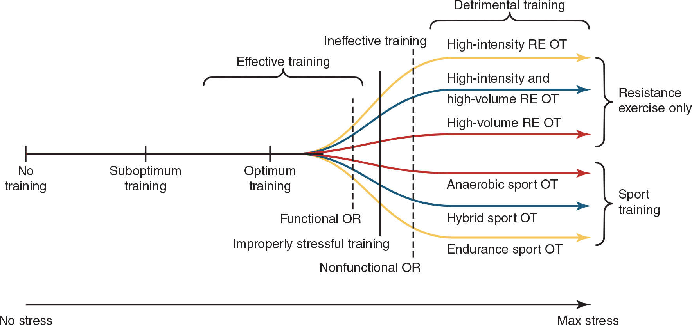
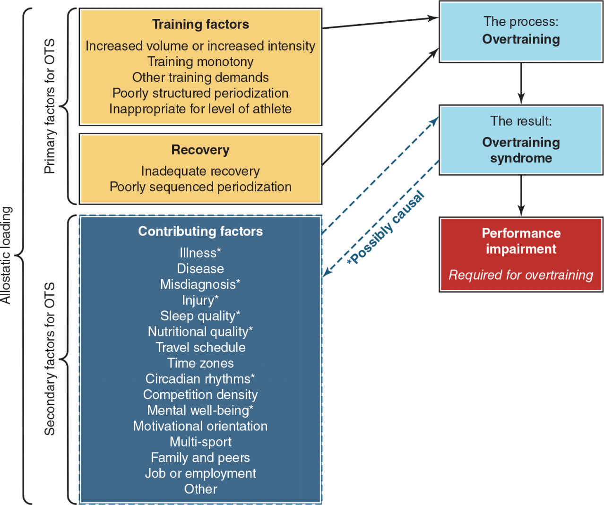

Overtraining, Overreaching, and Recovery | 原文頁碼 p1679–p1726
加重訓練負荷本身不是壞事。只有當「訓練壓力加生活壓力的總和」長期超過「恢復能力」時,身體才會從有用的短期超載(功能性過度運動)滑向非功能性過度運動,再惡化為過度訓練症候羣。所有恢復手段的第一步,都是先降低訓練壓力。
要充分發揮運動潛能,訓練計畫裡通常要有高訓練量、高強度的區塊(見第22章)。壓力本身不是敵人。漢斯·塞利(Hans Selye)提出的一般適應症候羣(General Adaptation Syndrome, GAS)描述生物系統面對壓力的三個階段:警戒、抵抗、適應。對應到訓練上就是:表現先下降,接著恢復,最後提升並超過原點。
但如果壓力大到系統抵抗不住,後果就是崩潰。對運動員而言,這就是一路下滑,進入過度訓練症候羣(overtraining syndrome, OTS)。教材特別提醒:GAS 和週期化都只是模型,不是物理定律,甚至有學者質疑阻力訓練必然累積疲勞的說法。不過絕大多數研究者與實務者仍接受這個核心邏輯:施加超載、給足恢復、產生適應。教練的專業就在於製造恰到好處的超載,並安排正確的恢復時機。
「過度訓練」這個詞在健身圈使用得很隨意,考試時必須依循教科書的定義。歐洲運動科學學院(ECSS)與美國運動醫學會(ACSM)曾成立聯合工作小組,發表「過度訓練症候羣的預防、診斷與治療」立場聲明(2006 年,2013 年更新),給出共識定義。
過度訓練(overtraining, OT):訓練與非訓練壓力累積,導致運動表現長期下降,伴隨或不伴隨生理與心理的適應不良徵兆,恢復可能需要數週或數月。
過度運動(overreaching, OR):同樣是壓力累積,但表現下降是短期的,恢復可能只需數天到數週。兩條定義幾乎一樣,差別只在嚴重程度與恢復時間。
工作小組同時釐清了一件關鍵的事:過度訓練是一個過程(訓練量、強度過高這件正在發生的事),而 OTS 是這個過程的結果(一整套生理心理症狀加上表現下降)。用「症候羣」一詞,正是在強調症狀眾多、彼此關聯、難以處理。而運動表現下降是 OTS 成立的必要條件:沒有長期表現下滑,就談不上 OTS。此外,人類早在 1866 年就記錄過「體力消耗超過身體能承受、又未以足夠飲食與休息補回」的問題。這不是新概念,只是近年研究才迅速普及。
不是所有「練過頭」都一樣壞。教科書把訓練強度排在同一把階梯上:從無訓練、最佳訓練、刻意的高強度區塊,一路到 FOR、NFOR、OTS。不同專項(長跑、摔跤、鉛球)跌落這把階梯的方式與速度各不相同。
功能性過度運動(functional overreaching, FOR)是刻意安排的短期超載。多數計畫會刻意排入大訓練量的微週期或中週期,例如季前營一天練兩到三次。短期內表現下降,但數天到數週就能恢復,而且常伴隨超量恢復(supercompensation),表現可超過原基線。FOR 是許多成功教練的常用工具,也是 GAS 模型裡正常的一環。
非功能性過度運動(non-functional overreaching, NFOR)看起來像 FOR,但有兩個決定性差別:短期累積的疲勞更大;恢復時間更長。NFOR 之後不會出現超量恢復,只能回到基線。名字裡的「非功能性」就是徒勞:沒有表現增益,還白白付出了壓力與風險。
過度訓練症候羣(OTS)是階梯最底層。表現長期下降,恢復以數週到數月計,教材記載大量長跑的極端案例恢復長達一年。它會嚴重幹擾甚至中斷賽季。另外,最輕的一層是表現停滯(performance plateau):認真的訓練者都會遇到週期性瓶頸,停滯本身不必然是過度運動,只有當它源自訓練負荷安排不當時,才需要修正。
| 層級 | 性質 | 恢復時間(依教材) | 超量恢復? | 對計畫的意義 |
|---|---|---|---|---|
| 最佳訓練 | 負荷與恢復平衡 | 每次課後即恢復 | 持續正進步 | 理想狀態 |
| FOR 功能性過度運動 | 刻意短期加量(如季前營一天 2–3 練) | 數天到數週 | 有,表現可超過基線 | 有效工具,成功教練常用 |
| NFOR 非功能性過度運動 | 疲勞累積更大 | 更長(週計) | 沒有,只回到基線 | 白費力氣,還附帶風險 |
| OTS 過度訓練症候羣 | 長期 OT 過程的結果 | 數週到數月,極端案例一年 | 談不上,表現長期下滑 | 毀滅性,需專業介入 |
1976 年,Israel 提出把 OTS 依自主神經系統(autonomic nervous system)的反應方式分成兩型。這一分型沿用至今,考試常考。
交感神經過度訓練症候羣(sympathetic OTS, SOTS):長期僅為假設,直到在一組因高強度阻力訓練而過度訓練的受試者身上獲得證實(Fry, 1994)。主要特徵是運動與訓練時腎上腺素(epinephrine)反應增強。兒茶酚胺(catecholamines)長期偏高,會導致骨骼肌上的 β2 受體下調(downregulation),這是 SOTS 伴隨肌肉收縮能力受損的重要機制。曾有假設認為 SOTS 會先於 POTS 出現,但未被證實。它與力量、爆發力取向的訓練關聯最深。
副交感神經過度訓練症候羣(parasympathetic OTS, POTS):舊稱艾迪生氏症候羣,因為常伴隨應激荷爾蒙皮質醇(cortisol)濃度降低,表現為副交感神經活動佔上風。最常見於訓練量極大的有氧耐力運動員。診斷陷阱:靜息心率(resting heart rate)下降通常是心血管健康的表徵,但對 POTS 者而言,過低的靜息心率反而是病態警訊。POTS 者對運動的腎上腺素反應鈍化,舊文獻甚至把這種腎上腺素生成能力不足稱作「腎上腺衰竭」。Lehmann 團隊對中長跑運動員超大訓練量的經典研究支持此一分型,案例恢復期長達一年。
請注意教科書的謹慎之處:它對 SOTS/POTS 的描述重點是自主神經與荷爾蒙的生理特徵,失眠、食慾改變這類行為症狀在文獻中常見,但本章原文的重點是腎上腺素反應方向與皮質醇。考試答這兩型的差別,就答「腎上腺素反應增強對比鈍化」「皮質醇降低」「力量型對比耐力型好發」。
理解 OT/OR 的第一步,是檢視壓力與恢復的天平。天平的兩端都不只有訓練。訓練端:訓練量(總次數、訓練負荷、機械功、代謝功、頻率)與訓練強度(相對 %RM、絕對重量 kg、主觀用力程度)過高都會引發問題;週期化設計不良、訓練負荷缺乏變化(可用變異係數 coefficient of variation,%CV = SD/平均值的百分比量化)、賽前未妥善減量,同屬訓練端成因;專項練習與比賽本身的壓力也必須計入訓練總量。
訓練場外的一端,教科書稱為異質性負荷(heterostatic overload)。這個 1993 年提出的概念,指的是所有前因(促成因素)累積造成的身體損耗:生活事件、工作與學業、人際與家庭、差旅與時差、環境改變(高溫、低溫、潮濕、海拔)、月經週期、傷病史、營養不足、睡眠欠缺。這些次要因素既可能誘發 OTS,也可能是 OTS 的產物,實務上必須分辨它們是訓練之外的誘發因素,還是過度訓練本身造成的後果。
幾件必記的衍生知識:相對能量不足症候羣(relative energy deficiency in sport, RED-S,舊稱女運動員三聯徵)與 OTS 症狀大量重疊、互為因果,懷疑 RED-S 時應轉介專業人員,教練要懂得判斷轉介時機。臨牀憂鬱症、創傷後壓力症候羣也與 OTS 相似。高風險情境包括:訓練計畫缺乏密切監控、僅有網路教練而缺乏面對面交流、完全沒有客觀監測、訓練水平愈高、體能愈好的運動員,風險反而愈大、大賽前進行極限訓練卻未安排減量、由經驗不足者帶課。
OTS 必帶表現下降,但哪些指標先掉有順序。在阻力訓練造成的過度訓練中,速度(例如短跑)最敏感,通常比其他多數指標先下降;緊接著是功率(力×速度)下滑;最大力量(如 1RM)往往是最後才降的指標之一,可說「力量被保護得很好」。等速力量、垂直跳高度與跳躍動力學都屬高敏感指標,一週內就能看到變化。心理面更敏感:恢復知覺可在數天內惡化(敏感性極高),訓練慾望、自我效能約一週內受影響。所以監測要速度、跳躍、心理指標三管齊下,不能只盯深蹲數字。
另一半同樣重要:不是所有表現不佳都是過度訓練。疾病、RED-S、心理因素都會造成表現低落。教科書特別提醒一個經典誤判:訓練巔峯與比賽時間錯開,賽前還在消化大訓練量,比賽表現自然不佳。這看起來像 OT,實際原因是訓練時機錯位,不是訓練過度。把「表現差」直接等於「練太多」,是教練最昂貴的錯誤之一。
監測用的測試需同時符合四項條件:對專項與相關生理系統有效、結果可靠、對訓練與比賽刺激敏感、容易融入例行流程。測試操作必須標準化,受試者必須盡全力,否則數據失去意義;結果要能快速回饋,才來得及調整訓練。
日常監測的常用工具(教材圖 24.15 節錄)包括:訓練負荷監控(內部與外部)、晨間醒來時的靜息心率、運動後恢復心率、心率變異度(heart rate variability, HRV)、肌肉氧飽和度、無氧閾、RPE(rating of perceived exertion, 自覺用力程度)對乳酸、垂直跳高度與起跳力量功率、相同絕對負荷下的槓鈴速度、衝刺(加速、第一步速度、最大速度、減速)、變向與反應時間、認知測驗、飲食紀錄、睡眠紀錄、訓練問卷、比賽數據與教練主觀評價。晨間體重應每天量測:短時間急降多為脫水或肝醣流失,持續下降要警覺能量赤字(連回 RED-S)。
問卷類(教材表 24.3 節錄):Borg RPE/CR10、情緒狀態量表(profile of mood states, POMS)、運動員生活需求問卷(DALDA)、運動員恢復壓力問卷(REST-Q)、整體恢復質量問卷(TQR)、胡珀指數(Hooper Index,彙整睡眠、疲勞、肌肉痠痛、壓力、心情五項日常評分)等。選擇問卷要考慮:長度、是否通過驗證、受試者是否讀得懂、資料是否易於處理、能否在無壓力下填寫、對過度訓練刺激是否敏感。教練營造的動機氛圍與教練自身的心理健康,教材也指出會影響選手,屬於容易忽略的監測項目。
荷爾蒙與血液檢查(睪固酮、皮質醇、睪固酮/皮質醇比值、生長激素、細胞因子、免疫指標等)在機製表中列為「強」證據的內分泌幹擾途徑,但要分清楚:那是致病機制的證據強度,不是診斷工具的可靠性。教材的注意事項寫得很直白:荷爾蒙水平變化反映的是壓力,不是過度訓練本身,任何壓力源都能讓數值異常。因此荷爾蒙檢查適合排在後段,不能當第一線雷達。
教材採納 Bernaciková 等人的建議,把監測工具分三級,循序升級,避免不必要的高成本檢查:
| 類別 | 頻率 | 特性 |
|---|---|---|
| 第一類 | 每天 | 操作簡便、便宜、結果快速,教練與運動員都方便(晨間心率、RPE、睡眠紀錄) |
| 第二類 | 每隔幾天 | 較長且較複雜的問卷,略不方便,但結果仍快速(REST-Q、POMS、Hooper 指數) |
| 第三類 | 偶爾(如每月) | 複雜、具侵入性、昂貴、結果較慢(血液荷爾蒙、實驗室測試) |
監測流程從第一類開始;第一類示警才升級到第二類;第二類示警才升級到第三類。
一旦懷疑 OT/OR/OTS,首要原則永遠是:降低訓練負荷。教材表 24.4 的證據分級很清楚,修改訓練計畫(降低訓練量、頻率、強度,甚至暫停)是「最強」證據;減量訓練(taper)屬「強」,而且設計得當的減量還能提升表現測驗成績。時間參考:出現過度運動(OR)後停止訓練,表現最快一週內即可回升;較嚴重的過度訓練,高強度阻力訓練後的恢復可能長達四周;大量長跑後的恢復需數月甚至一年。注意:暫停一週阻力訓練對力量與肌肥大的損失其實很有限,這個成本遠比讓選手持續惡化便宜。
非訓練手段中,優質睡眠是唯一拿到「強」證據的恢復方式。睡眠同時支撐本章的三大支柱:荷爾蒙(第 4 章:深層睡眠與生長激素等合成代謝荷爾蒙分泌密切相關,睡不好等於抽走恢復的化學原料)、心理(第 9 章:情緒調節、動機與專注都會因睡眠不足而衰退;教材也把正念介入列為「有前景」)、表現(睡眠債直接反映在速度與跳躍指標上)。營養方面,教材把碳水化合物列為「有前景」,蛋白質、支鏈氨基酸、硝酸鹽、L-穀氨醯胺、維生素、口服 ATP 都只有「可能的」等級;充足熱量、蛋白質、肝醣補回、微量營養素與水分是恢復的基礎(連回第 10、11 章)。
其餘手段要保守:按摩與多數冷凍療法「結論不明」,冷水浸泡(cold water immersion)只是「有前景」,肌筋膜放鬆、振動泡沫軸、壓力衣、水合、針灸、紅光療法全部停在「可能的」。臥牀休息有助於傷病恢復,卻不利於體能維持,別開錯藥方。教科書直說:很多復健手段的證據是從一般族羣的治療推斷過來的,直接套用到 OTS 的資料很少。宣稱前要保守,優先順序不能排錯:訓練調整 > 睡眠 > 營養 > 其他。
預防清單(圖 24.16 節錄,比治療更便宜):訓練中安排主動與被動恢復;常規安排一天或多天完全休息,休息日至關重要;限制過長的課程與過高的訓練頻率;訓練量短時間大幅增加(超過 30%)時務必謹慎;曾穩定承受訓練壓力者耐受力較高,因此刺激應漸進;訓練刺激要變化,善用週期化;把阻力訓練與專項、其他體能訓練的壓力加總監控;納入睡眠、飲食、心理技能;監測外部壓力;建立正式運動員監測計畫。備註:肌酸、恢復飲料、蛋白質與碳水補充劑等補充品「可能有幫助」,但仍是輔助層。
| 中文術語 | English | 一句話定義 |
|---|---|---|
| 過度訓練 | overtraining (OT) | 壓力累積導致表現長期下降的過程,恢復需數週到數月。 |
| 過度訓練症候羣 | overtraining syndrome (OTS) | OT 過程的結果:生理心理適應不良症狀羣,表現下降為必要條件。 |
| 過度運動 | overreaching (OR) | 壓力累積造成的短期表現下降,恢復需數天到數週。 |
| 功能性過度運動 | functional overreaching (FOR) | 刻意安排的短期超載,恢復後可出現超量恢復。 |
| 非功能性過度運動 | non-functional overreaching (NFOR) | 疲勞累積更大、恢復更長,只能回到基線,無表現增益。 |
| 一般適應症候羣 | General Adaptation Syndrome (GAS) | 塞利的壓力模型:警戒、抵抗、適應三階段。 |
| 交感神經過度訓練症候羣 | sympathetic OTS (SOTS) | 運動時腎上腺素反應增強,伴 β2 受體下調,力量型好發。 |
| 副交感神經過度訓練症候羣 | parasympathetic OTS (POTS) | 副交感主導、皮質醇降低、靜息心率異常偏低,高訓練量耐力型好發。 |
| 異質性負荷 | heterostatic overload | 訓練與生活等所有前因累積造成的身體總損耗。 |
| 相對能量不足症候羣 | relative energy deficiency in sport (RED-S) | 長期能量攝取不足引發的多系統症候羣,症狀與 OTS 重疊。 |
| 運動表現停滯 | performance plateau | 最輕微的表現卡住,認真的訓練者也會遇到,不必然是過度運動。 |
| 超量恢復 | supercompensation | 恢復後表現超過原基線的現象,FOR 的目標。 |
| 下調 | downregulation | 刺激長期過強導致受體數目減少,SOTS 中指 β2 受體減少。 |
| 兒茶酚胺 | catecholamines | 腎上腺素等應激遞質的總稱,長期偏高與 OTS 相關。 |
| 皮質醇 | cortisol | 應激荷爾蒙;POTS 常伴其濃度降低。 |
| 變異係數 | coefficient of variation (CV) | SD 除以平均值,可用於量化訓練負荷是否有變化。 |
| 減量訓練 | taper | 賽前系統性降低負荷以恢復並提升表現,證據「強」。 |
| 心率變異度 | heart rate variability (HRV) | 心跳間期的波動幅度,常用的自主神經監測指標。 |
| 胡珀指數 | Hooper Index | 彙整睡眠、疲勞、肌肉痠痛、壓力、心情的每日問卷總分。 |
| 自主神經系統 | autonomic nervous system | 調控心跳、腺體等的不隨意神經系統,分為交感與副交感兩支。 |


| 表現指標(依教材表 24.1 整理) | 敏感性 | 下降出現速度 |
|---|---|---|
| 恢復知覺、心情狀態 | 非常高 | 數天內 |
| 短跑速度 | 高 | 最快出現,常於一週後浮現 |
| 功率(阻力訓練)、衝刺表現 | 高 | 一週以上 |
| 垂直跳高度、跳躍動力學/運動學 | 高 | 一週內 |
| 等速力量、刺激力(單關節) | 高 | 一週內 |
| 自我效能(自信)、訓練慾望 | 高 | 一週內 |
| 變向與敏捷性 | 中 | 一週以上 |
| 訓練能力(對高強度、高頻率訓練的耐受力) | 中 | 發生較慢 |
| 最大力量(動態恆定外在阻力 1RM、多關節) | 低 | 最後才發生 |
| 恢復策略(依教材表 24.4 整理) | 證據強度(教材分級) |
|---|---|
| 修改訓練計畫(降量、降頻、降強度,甚至暫停) | 最強 |
| 減量訓練(taper) | 強 |
| 優質睡眠 | 強 |
| 正念介入 | 有前景 |
| 碳水化合物補充 | 有前景 |
| 冷水浸泡 | 有前景 |
| 肌筋膜放鬆、振動泡沫軸、壓力衣、水合、針灸、紅光療法 | 可能的 |
| 蛋白質、支鏈氨基酸、硝酸鹽、L-穀氨醯胺、維生素、口服 ATP | 可能的 |
| 按摩、其他冷凍療法 | 結論不明 |
| 臥牀休息 | 對傷病有益,對體能不利 |
Q1.(是非題)過度訓練(OT)指的是一組症狀,過度訓練症候羣(OTS)指的是訓練過程?
Ans:✕ — 剛好相反:OT 是過程,OTS 是過程導致的結果。
Q2.(選擇題)下列哪一項是 OTS 存在的必要條件?(A)表現受損且需長期恢復 (B)睪固酮下降、皮質醇升高 (C)比賽成績不佳 (D)非訓練壓力累積
Ans:A — 沒有長期運動表現下降,就談不上 OTS;荷爾蒙與比賽輸贏都不是必要條件。
Q3.(選擇題)阻力訓練造成過度訓練時,哪類能力最敏感、最先下降?(A)高速運動(短跑) (B)最大力量 (C)攝氧能力 (D)重複間歇耐受力
Ans:A — 速度最先下降,功率隨後,最大力量往往最後才降。
Q4.(選擇題)訓練與比賽之外的各種促成因素(生活事件、睡眠、營養等)的總稱是?(A)異質性負荷 (B)社會心理功能障礙 (C)訓練量負荷 (D)自主神經功能障礙
Ans:A — 教材定義 heterostatic overload 為所有前因造成的身體總損耗。
Q5.(是非題)安排得當的功能性過度運動(FOR)是一種有效的訓練工具?
Ans:○ — 短期下降後數天到數週恢復,可產生超量恢復,成功教練常用。
Q6.(是非題)副交感型 OTS(POTS)的運動員靜息心率通常上升,所以容易發現?
Ans:✕ — POTS 的靜息心率常異常偏低,與「心肺適應良好」混淆,診斷反而更棘手。
Q7.(選擇題)非功能性過度運動(NFOR)妥善恢復後,最終結果通常是?(A)超過基線 (B)只回到基線 (C)永遠無法恢復 (D)直接轉為 RED-S
Ans:B — NFOR 的特徵就是沒有超量恢復,只能回到基線。
Q8.(是非題)血中睪固酮/皮質醇比值下降可以用來確診 OTS?
Ans:✕ — 荷爾蒙變化反映的是壓力,不是過度訓練本身,只能作為輔助線索。
Q9.(選擇題)教材表 24.4 中證據強度「最強」的恢復策略是?(A)按摩 (B)修改訓練計畫(降量降強度) (C)冷水浸泡 (D)支鏈氨基酸
Ans:B — 修改訓練計畫是「最強」;減量與優質睡眠同屬「強」,按摩結論不明。
Q10.(是非題)訓練量短時間內大幅增加超過 30% 時,應特別謹慎以防過度訓練?
Ans:○ — 教材的預防策略明確指出「訓練量大幅增加(>30%)務必謹慎」。